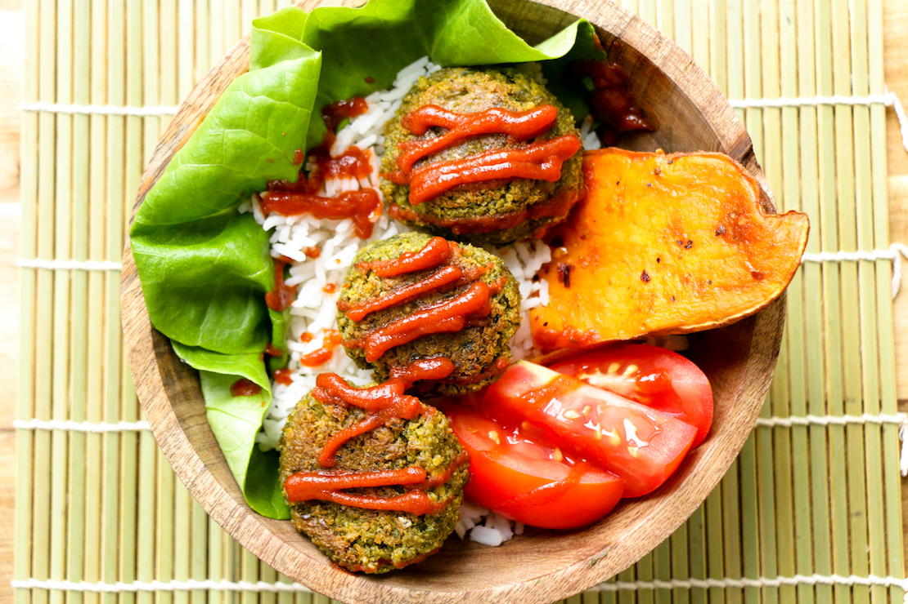

Veggie Balls

A simple and healty recipe based on an original from The Buddhist Chef! Oven roasted vegan veggie balls tons of spinach, spices and sunflower seeds for a tender yet crunchy texture. One of our favorites for weekly lunches!
Sources :
Ingredients :
- 1 cup frozen corn
- 1 cup frozen green peas
- 1 cup of Quick Oats
- 2 cups of cooked chick peas
- 1 cup bread crumbs
- 1/4 cup nutritional yeast
- 1 tsp. onion powder
- 1 tsp. dried oregano
- 1 tsp. dried basil
- 1 tsp. of salt
- 3 cups baby spinach
- 1 cup oat milk
- Sri Racha to taste
- vegetable oil for the baking sheet
Steps :
- Preheat oven to 350 ˚F.
- Place All the ingredients except oats, bread crumbs, sunflower seeds and Sri Racha in a food processor and blend until well mixed and texture is smooth.
- Transfer de puree in a bowl and mix in the rest of the ingredients. Mix well and adjust hot sauce to taste.
- Form patties using an ice cream scoop and put on a well oiled baking mat in a baking tray.
- Cook for 20 minutes at 350 ˚F. Turn the balls over and pursue cooking for 15 minutes.